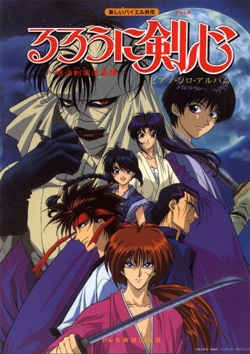
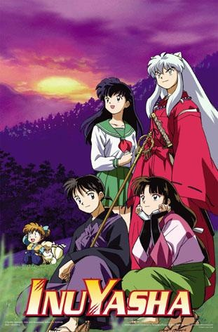
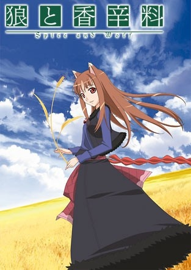
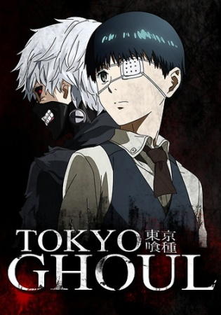

Over my lifetime, I have watched over a 100 anime series of all different kinds. It is a hobby many people don't know about me and neither have I met many people into anime like me. Here, I will recommend my personal favourite anime series of all time with descriptions letting you know what to expect. Also, you can watch all these anime dubbed which I highly recommend as the dubs are top quality in these shows.
| Name: | Description/Review: |
|---|---|
Fullmetal Alchemist |
There are 2 versions to this anime and this one is the original one. There are 51 episodes in this series. This is one of those shows everyone should have watched if they call themselves an anime fan. After this, there is a movie to end this series off called The Conqueror of Shamballa so don't forget to watch that to see the ending. Edward Elric, a young, brilliant alchemist, has lost much in his twelve-year life: when he and his brother Alphonse try to resurrect their dead mother through the forbidden act of human transmutation, Edward loses his family as well as two of his limbs. With his supreme alchemy skills, Edward binds Alphonse's soul to a large suit of armor.
A year later, Edward, now promoted to the fullmetal alchemist of the state, embarks on a journey with his younger brother to obtain the Philosopher's Stone. The fabled mythical object is rumored to be capable of amplifying an alchemist's abilities by leaps and bounds, thus allowing them to override the fundamental law of alchemy: to gain something, an alchemist must sacrifice something of equal value. Edward hopes to draw into the military's resources to find the fabled stone with his power and restore his and Alphonse's bodies to normal. However, the Elric brothers soon discover that there is more to the legendary stone than meets the eye, as they are led to the epicenter of a far darker battle than they could have ever imagined. |
| Genres: Action, Adventure, Comedy, Drama, Fantasy, Magic, Military, Shounen |
| Name: | Description/Review: |
|---|---|
Fullmetal Alchemist: Brotherhood |
This is the second newer version of the anime that follows the manga closely. It has 64 episodes. It seems more people like this version better because not many people like the old ending. Personally, I much prefer the old one just because the concept of alchemy in their world is much more intriguing. But if you want full closure, brotherhood would be the way to go. I'd recommend watching both if you have the time but if you can only choose one, then just go with brotherhood to be safe. In this world there exist alchemists, people who study and perform the art of alchemical transmutation—to manipulate objects and transform one object into another. They are bounded by the basic law of alchemy: in order to gain something you have to sacrifice something of the same value.
The main character is the famous alchemist Edward Elric—also known as the Fullmetal Alchemist—who almost lost his little brother, Alphonse, in an alchemical accident. Edward managed to attach his brother's soul to a large suit of armor. While he did manage to save his brother's life, he paid the terrible price of his limbs. To get back what they've lost, the brothers embark on a journey to find the Philosopher's Stone that is said to amplify the powers of an alchemist enormously; however, on the way, they start uncovering a conspiracy that could endanger the entire nation, and they realize the misfortunes brought upon by the Philosopher's Stone. |
| Genres: Action, Adventure, Comedy, Drama, Fantasy, Magic, Military, Shounen |
| Name: | Description/Review: |
|---|---|
| Rurouni Kenshin | This is one of my all time favourites and one of those old classics back in the day. Every anime fan around my age would have definately come across this show. Jam-packed with cool sword-fighting, action scenes and a great historic plot to go along with it who wouldn't like it? Plus the soundtrack is pretty good too. This series has 94 episodes and there are also 2 OVAs (mini-movies) that are a must see. They are called Trust and Betrayal, and Reflection. The OVAs have a much darker atmosphere to it which matches well with the main characters past.
Himura Kenshin is a vagabond with a dark past and sunny disposition. Not a ronin but a rurouni, he was never a samurai, but an assassin of utmost skill in the Meiji restoration, who in the turning point of the war simply walked away. His travels lead him to Tokyo in the 11th year of the Meiji era, where he befriends a female Kendo master, a former thief, a brawler and a doctor all with their own secrets. Together they fight off the enemies surfacing from the dark past that Kenshin cannot escape. |
| Genres: Action, Adventure, Comedy, Historical, Romance, Samurai |
| Name: | Description/Review: |
|---|---|
| Inuyasha | I'm sure even if you're not an anime fan, you must have come across this anime on YTV back then. Action, romance, fantasy, it is every popular genre packed into one really awsome series. There are 167 episodes to watch and then a 26 episode second season called Inuyasha:The Final Act. The second season is not as good because the authors pacing is way too fast but if you'd like to see the conclusion, then it is a must see. What's even better than the show itself is the soundtrack. It is hands down the best anime soundtrack I've heard of all time. Definately check those out too.
Based on the Shogakukan award-winning manga of the same name, InuYasha follows Kagome Higurashi, a fifteen-year-old girl whose normal life ends when a demon drags her into a cursed well on the grounds of her family's Shinto shrine. Instead of hitting the bottom of the well, Kagome ends up 500 years in the past during Japan's violent Sengoku period with the demon's true target, a wish-granting jewel called the Shikon Jewel, reborn inside of her. After a battle with a revived demon accidentally causes the sacred jewel to shatter, Kagome enlists the help of a young hybrid dog-demon/human named Inuyasha to help her collect the shards and prevent them from falling into the wrong hands. Joining Kagome and Inuyasha on their quest are the orphan fox-demon Shippo, the intelligent monk Miroku, and the lethal demon slayer Sango. Together, they must set aside their differences and work together to find the power granting shards spread across feudal Japan and deal with the threats that arise. |
| Genres: Action, Adventure, Comedy, Demons, Fantasy, Magic, Romance, Shounen, Supernatural |
| Name: | Description/Review: |
|---|---|
| Spice and Wolf | Now here is a change of pace instead of the action-packed series I've listed so far. The main genre I would say is romance but it is also psychological. The show follows the adventures of a supernatural being and a normal human and their relationship. The main dilemma is that no matter what they do, in the end they will just end up being separated because the main female lead can live forever while she has to watch the male lead eventually die. It is definately a must-see if you have nothing better to do. There is a second season to this series and both are 13 episodes long. Unfortunately, there is no conclusion unless you read the light novels.
Holo is a powerful wolf deity who is celebrated and revered in the small town of Pasloe for blessing the annual harvest. Yet as years go by and the villagers become more self-sufficient, Holo, who stylizes herself as the "Wise Wolf of Yoitsu," has been reduced to a mere folk tale. When a traveling merchant named Kraft Lawrence stops at Pasloe, Holo offers to become his business partner if he eventually takes her to her northern home of Yoitsu. The savvy trader recognizes Holo's unusual ability to evaluate a person's character and accepts her proposition. Now in the possession of both sharp business skills and a charismatic negotiator, Lawrence inches closer to his goal of opening his own shop. However, as Lawrence travels the countryside with Holo in search of economic opportunities, he begins to realize that his aspirations are slowly morphing into something unexpected.Based on the popular light novel of the same name, Ookami to Koushinryou, also known as Spice and Wolf, fuses the two polar genres of economics and romance to create an enthralling story abundant with elaborate schemes, sharp humor, and witty dialogue. Ookami to Koushinryou is more than just a story of bartering; it turns into a journey of searching for a lost identity in an ever-changing world. |
| Genres: Adventure, Fantasy, Historical, Romance |
| Name: | Description/Review: |
|---|---|
| Tokyo Ghoul | I almost forgot this show. Overall, this show does have a depressing dark atmosphere to it. Two species, humans and ghouls, are essentially at war with each other and the main character is stuck between both worlds. This show explores the deepest, dark emotions of humanity. There is a second season also out with a third one coming in the future, 12 episodes each. I probably didn't give the most convincing review but just watch it, I guarantee you would like it.
Tokyo has become a cruel and merciless city—a place where vicious creatures called “ghouls” exist alongside humans. The citizens of this once great metropolis live in constant fear of these bloodthirsty savages and their thirst for human flesh. However, the greatest threat these ghouls pose is their dangerous ability to masquerade as humans and blend in with society. Based on the best-selling supernatural horror manga by Sui Ishida, Tokyo Ghoul follows Ken Kaneki, a shy, bookish college student, who is instantly drawn to Rize Kamishiro, an avid reader like himself. However, Rize is not exactly who she seems, and this unfortunate meeting pushes Kaneki into the dark depths of the ghouls' inhuman world. In a twist of fate, Kaneki is saved by the enigmatic waitress Touka Kirishima, and thus begins his new, secret life as a half-ghoul/half-human who must find a way to integrate into both societies. |
| Genres: Action, Drama, Horror, Mystery, Psychological, Seinen, Supernatural |